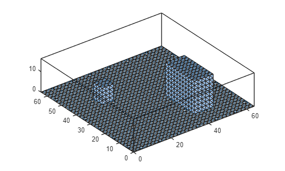

Introduction to uDALES post-processing with MATLAB¶
This tutorial describes how to read and process facet data of the LES code uDALES using MATLAB. This tutorial introduces the udbase post-processing class. There are separate tutorials for processing field files and facet files.
The udbase post-processing class reads in most important input parameters, and contains a number of methods to load field and facet data.
Field data:
- load_stat_xyt. This method load the 1D slab- and time-averaged statistics from the file
xytdump.expnr.nc. Several time-intervals may be present in the data. - load_stat_t. This method loads the 3D time-averaged statistics from the file
tdump.expnr.nc. Several time-intervals may be present in the data. - load_stat_tree. This method loads the 3D time-averaged statistics of the tree source terms from the file
treedump.expnr.nc. This method works exactly the same way asload\\_stat\\_t. - load_field. This method loads instantaneous 3D data from the file
fielddump.expnr.nc. Several output times may be present in the data. - load_slice. This method loads instantaneous 2D slices of instantaneous 3D data from the file
Xslicedump.expnr.nc. Several output times may be present in the data.
Facet data:
- calculate_frontal_properties. This method calculates the skylines, frontal areas and blockage ratios in the x- and y-direction.
- plot_fac_type. This method displays the type of surface for each facet.
- assign_prop_to_fac. This method assigns a property of the facet type to each of the facets, so it can be used for calculation and visualisation
- plot_fac. This method displays a surface variable on the mesh.
- load_fac_momentum. This method loads instantaneous momentum surface data from
fac.expnr.nc. The first index is the facet id and second index is time. - load_fac_eb. This method loads instantaneous surface energy balance data from
facEB.expnr.nc. The first index is the facet id and second index is time. - load_seb. This method loads all instantaneous surface energy balance terms. The first index is the facet id and second index is time.
- load_fac_temperature. This method loads instantaneous facet temperature data
facT.expnr.nc. The first index is the facet id, the second is the layer index and the third index is time. - area_average_seb. This method calculates the area-averaged surface energy balance from the facet surface energy balances obtained using
load_seb. - area_average_fac. This method performs area-averaging over (a selection of) the facets. The facet index is assumed to be the first index of the array.
- plot_trees. This method volumetric tree blocks along with the STL geometry.
- convert_facflx_to_field. This method converts a facet variable to a density in a 3D field, so it can be used for post-processing (e.g. calculating distributed drag).
- convert_facvar_to_field. This method assigns facet variables to the 3D grid, so it can be used for post-processing (e.g. averaging over y).
The live matlab file of this tutorial can be found in the repository in the folder /docs/tutorial_mlx.
Initialising udbase¶
The starting point of this tutorial is that you have run a simulation and have merged the output files. If the simulations were performed on a HPC system, we assume that you have copied the output directory to your own workstation. Some of the netCDF (*.nc) files may be very large and you may only want to copy these if you plan to analyse the data.
The uDALES postprocessing class is called udbase. Typically, you will create a post-processing script in the output directory on your workstation, but it is also possible to have the output directory located in another directory. This is particularly useful if you are comparing several different simulations at the same time. Here, we will show how to use data from simulation 065 (expnr=065) that is located in a different directory from the one you are working in.
Note that the uDALES/tools/matlab path must be added via the Set Path button in order to use the udbase class. Alternatively, it can be added using the addpath function inside the script (done here).
% preamble
clear variables
close all
% add the uDALES matlab path
addpath('path_to_udales\tools\matlab')
% create an instance of the udbase class
expnr = 065;
expdir = 'path_to_experiments\065';
sim = udbase(expnr, expdir);
The constructor can have a number of input parameters:
help udbase.udbase
Class constructor.
udbase(expnr, dapath, load_preprocdata)
expnr: experiment number
dapath (optional): path to the experiment
Example:
obj = udbase(expnr, '/path/experiments/../100');
Documentation for udbase/udbase
The constructor of the udbase class reads in the following files:
namoptions.expnr. Contains the simulation input parameters.xxx.stl.Contains the urban geometry used for the simulation [optional].
Provided that load_preprocdata is not set to false, the constructor of the udbase class additionally reads the following files:
solid_(u,v,w,c).txt.Contains the indices of the (u,v,w,c)-volumes occupied by buildings.facets.inp. Contains information about the facet wall type and surface normal.factypes.inp. Contains information about the properties of the wall types.facetarea.inp. Contains information about the facet areas.fluid_boundary_(u,v,w,c).txt. Contains information about the fluid cells associated with facet sections.facet_sections_(u,v,w,c).txt. Information about facet section area, distance and flux point.
Accessing simulation properties¶
To view all simulation input parameters, simply type
sim
sim =
udbase with properties:
expnr: '065'
geom: [1x1 udgeom.udgeom]
xm: [64x1 double]
ym: [64x1 double]
zm: [64x1 double]
xt: [64x1 double]
yt: [64x1 double]
zt: [64x1 double]
dx: 1
dy: 1
dzm: [64x1 double]
dzt: [64x1 double]
Su: [64x64x64 logical]
Sv: [64x64x64 logical]
Sw: [64x64x64 logical]
Sc: [64x64x64 logical]
facs: [1x1 struct]
factypes: [1x1 struct]
facsec: [1x1 struct]
trees: []
stl_ground: 1
ktot: 64
fieldvars: ''v0,th,qt,u0,w0''
lBImin_w: 0
iwallmoist: 2
nbndpts_c: 5164
lbuoyancy: 1
lBImin_c: 0
nsolpts_c: 3488
iadv_thl: 2
nfctsecs_c: 7940
nbndpts_v: 5208
thl0: 301
rsmin: 200
iexpnr: 65
skyLW: 395
z0h: 6.7000e-05
wgrmax: 451
dtfac: 10
lxytdump: 1
tstatsdump: 5
z0: 0.0100
lvfsparse: 1
solarazimuth: 135
flrT: 298
wtsurf: 0
nfctsecs_w: 2817
ltdump: 0
lfielddump: 0
I: 814
ylen: 64
tfielddump: 11
itot: 64
nfctsecs_u: 11214
u0: 2
uflowrate: 5
jtot: 64
min_vf: 0.0100
zsize: 64
nnz: 909975
xlen: 64
libm: 1
lBImin_v: 0
nfaclyrs: 5
nsolpts_v: 3696
solarzenith: 45
fraction: 0.5000
nfcts: 2658
igrw_damp: 0
tsample: 1
nsolpts_u: 3856
lperiodicEBcorr: 1
wqsurf: 0
maxD: 64
qt0: 0.0100
iadv_qt: 2
nprocx: 8
stl_file: 'geom.065.stl'
randu: 0.0100
lflat: 1
dtmax: 5
trestart: 51000
diag_neighbs: 0
nprocy: 4
irandom: 43
lBImin_u: 0
nbndpts_u: 5208
lmoist: 1
ltempeq: 1
lrandomize: 1
Dsky: 107.2000
GRLAI: 2.1000
nsolpts_w: 7584
ipoiss: 0
ladaptive: 1
dtEB: 1
nfctsecs_v: 12010
luvolflowr: 1
lvoutflowr: 0
wfc: 314
vflowrate: 0
lwriteEBfiles: 1
ps: 101300
runtime: 10000
facT: 301
sinkbase: 32
iwalltemp: 2
bldT: 298
lconstW: 1
lwritefac: 1
lvreman: 1
wsoil: 250
lEB: 1
wwilt: 172
nbndpts_w: 5164
For a complete list of parameters and their meaning, please consult the pre-processing documentation. Some commonly used parameters are
xlen,ylenandzsizethat represent the domain sizeitot,jtotandktotthat represent the total number of grid cells
To access a parameter directly, use the syntax object.prop. To access the domain length in x-direction, use
sim.xlen
ans = 64
The geometry stored in the STL file, if present, has been also loaded, which can be visualised using the method below. This method will produce an error if STL file does not exist or been loaded.
sim.geom.show();

This shows all individual faces. Use show_outline to see the building outlines.
sim.geom.show_outline();